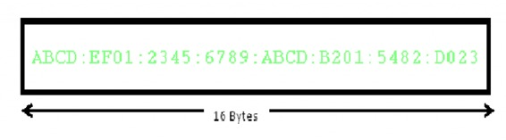
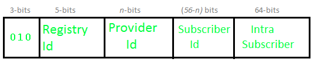
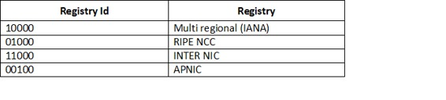
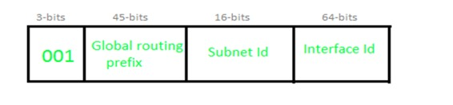
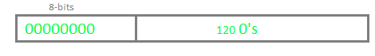
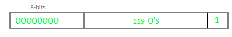
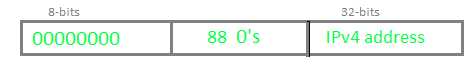
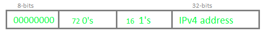
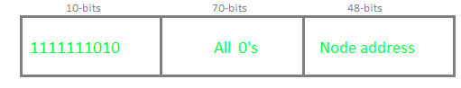
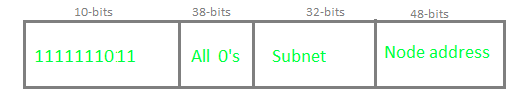

IP v6 was developed by Internet Engineering Task Force (IETF) to deal with the problem of IP v4 exhaustion. IP v6 is 128-bits address having an address space of 2^128, which is way bigger than IPv4. In IPv6 we use Colon-Hexa representation. There are 8 groups and each group represents 2 Bytes.

In IPv6 representation, we have three addressing methods :
Unicast Address: Unicast Address identifies a single network interface. A packet sent to unicast address is delivered to the interface identified by that address.
Multicast Address: Multicast Address is used by multiple hosts, called as Group, acquires a multicast destination address. These hosts need not be geographically together. If any packet is sent to this multicast address, it will be distributed to all interfaces corresponding to that multicast address.
Anycast Address: Anycast Address is assigned to a group of interfaces. Any packet sent to anycast address will be delivered to only one member interface (mostly nearest host possible).
Note : Broadcast is not defined in IPv6.
Types of IPv6 address:
We have 128 bits in IPv6 address but by looking at first few bits we can identify what type of address it is.
| Prefix | Allocation | Fraction of Address Space |
|---|---|---|
| 0000 0000 | Reserved | 1/256 |
| 0000 0001 | Unassigned (UA) | 1/256 |
| 0000 001 | Reserved for NSAP | 1/128 |
| 0000 01 | UA | 1/64 |
| 0000 1 | UA | 1/32 |
| 0001 | UA | 1/16 |
| 001 | Global Unicast | 1/8 |
| 010 | UA | 1/8 |
| 011 | UA | 1/8 |
| 100 | UA | 1/8 |
| 101 | UA | 1/8 |
| 110 | UA | 1/8 |
| 1110 | UA | 1/16 |
| 1111 0 | UA | 1/32 |
| 1111 10 | UA | 1/64 |
| 1111 110 | UA | 1/128 |
| 1111 1110 0 | UA | 1/512 |
| 1111 1110 10 | Link-Local Unicast Addresses | 1/1024 |
| 1111 1110 11 | Site-Local Unicast Addresses | 1/1024 |
| 1111 1111 | Multicast Address | 1/256 |
Note : In IPv6, all 0’s and all 1’s can be assigned to any host, there is not any restriction like IPv4.
Provider based Unicast address :
These are used for global communication.

First 3 bits identifies it as of this type.
Registry Id (5-bits) : Registry Id identifies the region to which it belongs. Out of 32 (i.e. 2^5), only 4 registry id’s are being used.

Provider Id : Depending on the number of service providers that operates under a region, certain bits will be allocated to Provider Id field. This field need not be fixed. Let’s say if Provider Id = 10 bits then Subscriber Id will be 56 – 10 = 46 bits.
Subscriber Id : After Provider Id is fixed, remaining part can be used by ISP as normal IP address.
Intra Subscriber : This part can be modified as per need of organization that is using the service.
Geography based Unicast address :

Global routing prefix : Global routing prefix contains all the details of Latitude and Longitude. As of now, it is not being used. In Geography based Unicast address routing will be based on location.
Interface Id : In IPv6, instead of using Host Id, we use the term Interface Id.
Some special addresses:
Unspecified –

Loopback –

IPv4 Compatible –

IPv4 mapped –

Local Unicast Addresses :
There are two types of Local Unicast addresses defined- Link local and Site Local.
Link local address:

Link local address is used for addressing on a single link. It can also be used to communicate with nodes on the same link. Link local address always begins with 1111111010 (i.e. FE80). Router will not forward any packet with Link local address.
Site local address:

Site local addresses are equivalent to private IP address in IPv4. Likely, some address space is reserved, which can only be routed within an organization. First 10-bits are set to 1111111011, which is why Site local addresses always begin with FEC0. Following 32 bits are Subnet ID, which can be used to create subnet within organization. Node address is used to uniquely identify the link; therefore, we use 48-bits MAC address here.
References :